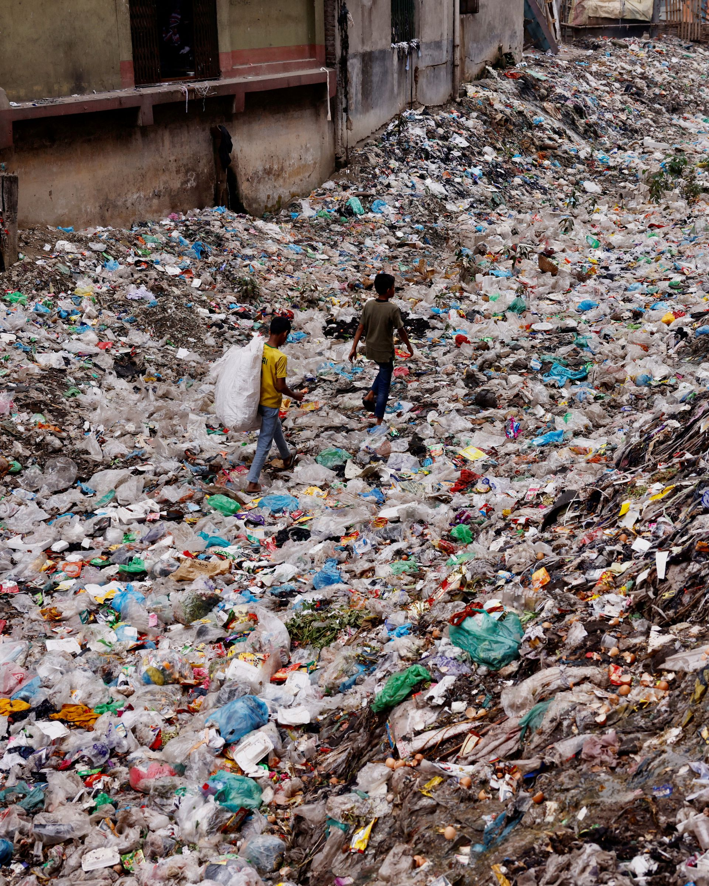

pollution, also called environmental pollution , the addition of any substance (solid, liquid, or gas) or any form of energy (such as heat, sound, or radioactivity) to the environment at a rate faster than it can be dispersed, diluted, decomposed, recycled, or stored in some harmless form. The major kinds of pollution, usually classified by environment, are air pollution, water pollution, and land pollution . Modern society is also concerned about specific types of pollutants, such as noise pollution, light pollution, and plastic pollution. Pollution of all kinds can have negative effects on the environment and wildlife and often impacts human health and well-being
Although environmental pollution can be caused by natural events such as forest fires and active volcanoes, use of the word pollution generally implies that the contaminants have an anthropogenic source—that is, a source created by human activities. Pollution has accompanied humankind ever since groups of people first congregated and remained for a long time in any one place. Indeed, ancient human settlements are frequently recognized by their rubble heaps and wastes—shell mounds , for instance. Pollution was not a serious problem as long as there was enough space available for each individual or group. However, with the establishment of permanent settlements by great numbers of people, pollution became a problem, and it has remained one ever since.

Cities of ancient times were often noxious places, fouled by human wastes and debris. Beginning about 1000 ce, the use of coal for fuel caused considerable air pollution, and the conversion of coal to coke for iron smelting beginning in the 17th century exacerbated the problem. In Europe, from the Middle Ages well into the early modern era, unsanitary urban conditions favoured the outbreak of population-decimating epidemics of disease, from plague to cholera and typhoid fever. Through the 19th century, water and air pollution and the accumulation of solid wastes were largely problems of congested urban areas. But, with the rapid spread of industrialization and the growth of the human population to unprecedented levels, pollution became a universal problem.
By the middle of the 20th century, an awareness of the need to protect air, water, and land environments from pollution had developed among the general public. In particular, the publication in 1962 of Rachel Carson's book Silent Spring focused attention on environmental damage caused by improper use of pesticides such as DDT and other persistent chemicals that accumulate in the food chain and disrupt the natural balance of ecosystems on a wide scale. In response, major pieces of environmental legislation, such as the Clean Air Act (1970) and the Clean Water Act (1972; United States) , were passed in many countries to control and mitigate environmental pollution.
The three major types of pollution are air pollution, water pollution, land pollution and noise pollution.